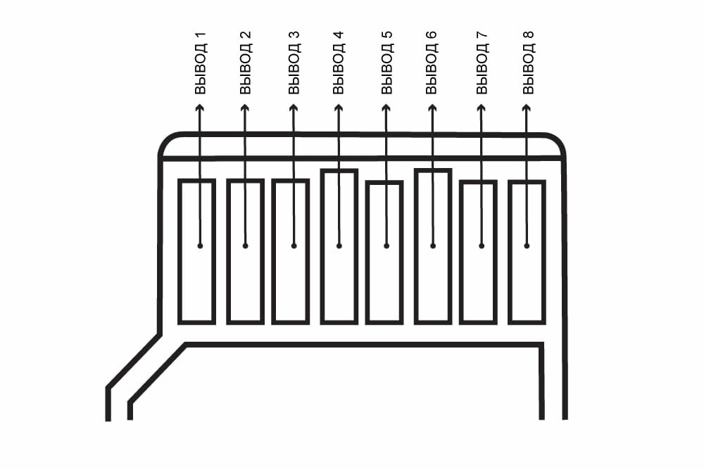

Вы можете использовать SD карту в ваших устройствах на Arduino, чтобы сохранять и извлекать информацию.
В некоторых приложениях на Arduino полезно иметь возможность локально сохранять и извлекать информацию. Вы можете сделать это с помощью Secure Digital, или SD, карты. SD карта – это энергонезависимая карта памяти, широко используемая в портативных устройствах, таких как мобильные телефоны, цифровые фотоаппараты, навигационные устройства GPS, карманные консоли и планшетные компьютеры. Другой тип SD карт – это карта microSD. Это самая маленькая карта памяти, ее размеры составляют 15 мм x 11 мм x 1 мм. Это примерно четверть размера SD карты обычного размера.Карта памяти microSD
Для подключения карты памяти microSD к нашей плате Arduino Mega мы будем использовать плату расширения Ethernet shield со встроенным слотом microSD. Однако, есть множество других плат расширения, доступных для других типов SD карт.Распиновка карты памяти microSD
Как показано на рисунке выше, карта памяти microSD имеет 8 выводов. Описание каждого вывода приведено в таблице ниже.
Описание выводов карты памяти microSD
|
Номер вывода |
Название |
Описание |
|
1 |
NC |
не подключен |
|
2 |
CS |
выбор чипа / выбор ведомого (SS) |
|
3 |
DI |
выход мастера / вход ведомого (MOSI) |
|
4 |
VDD |
напряжение питания |
|
5 |
CLK |
тактовый сигнал (SCK) |
|
6 |
VSS |
земля |
|
7 |
DO |
вход мастера / выход ведомого (MISO) |
|
8 |
RSV |
зарезервировано |
Если вы решили попробовать подключить SD карту самостоятельно, то убедитесь, что подключили выводы SD карты к соответствующим выводам платы Arduino. Так как мы используем имеющуюся в продаже плату расширения, то у нас с этим проблем нет. Всё, что нам нужно сделать, это сконфигурировать вывод Arduino, использующийся по умолчанию, как CS (выбор чипа), для работы в качестве выхода. В нашей Arduino Mega это вывод 53. На плате расширение Ethernet shield выводом CS является вывод 4. Вы должны правильно указать это в коде для SD карты.
Эксперимент 1
В этом эксперименте мы рассмотрим, как прочитать файл с SD карты.
Комплектующие
Код
Для чтения с SD карты мы будем использовать библиотеку SD.h. Данный код предполагает, что файл "ourfile.txt" уже записан на SD карту.
#include <SD.h>
const int cs = 4;
void setup()
{
Serial.begin(9600);
Serial.print("Initializing card...");
// убедитесь, что стандартный вывод выбора чипа работает как выход
pinMode(53, OUTPUT);
// посмотреть, есть ли карта
if (!SD.begin(cs))
{
Serial.println("Card failed to initialize, or not present");
return;
}
Serial.println("card initialized.");
// открыть файл с именем ourfile.txt
File myfile = SD.open("ourfile.txt");
// если файл доступен, прочитать его
if (myfile)
{
while (myfile.available())
{
Serial.write(myfile.read());
}
myfile.close();
}
else // если файл не может быть открыт, то выдать сообщение об ошибке
{
Serial.println("error opening the text file");
}
}
void loop()
{
}
Эксперимент 2
В этом эксперименте мы рассмотрим, как создать файл, записать его, а затем прочитать его с SD карты.
Комплектующие
Мы будем использовать то же самое аппаратное обеспечение, что и в предыдущем эксперименте.
Код
Чтобы записать файл на SD карту и прочитать его же, мы снова будем использовать библиотеку SD.h.
#include <SD.h>
File myfile;
void setup()
{
Serial.begin(9600);
Serial.print("Initializing card...");
// объявить стандартный CS вывод как выход
pinMode(53, OUTPUT);
if (!SD.begin(4)) {
Serial.println("initialization of the SD card failed!");
return;
}
Serial.println("initialization of the SDcard is done.");
myfile = SD.open("textFile.txt", FILE_WRITE);
if (myfile)
{
Serial.print("Writing to the text file...");
myfile.println("Congratulations! You have successfully wrote on the text file.");
myfile.close(); // закрыть файл
Serial.println("done closing.");
}
else // если файл не может быть открыт, то выдать сообщение об ошибке
{
Serial.println("error opening the text file!");
}
// снова открыть текстовый файл для чтения
myfile = SD.open("textFile.txt");
if (myfile)
{
Serial.println("textFile.txt:");
// прочитать весь текст, записанный в файле
while (myfile.available())
{
Serial.write(myfile.read());
}
// закрыть файл
myfile.close();
}
else // если файл не может быть открыт, то выдать сообщение об ошибке
{
Serial.println("error opening the text file!");
}
}
void loop()
{
}
Надеюсь, статья оказалась полезной. Оставляйте комментарии!